Tropilex: un'amaca per momenti di vero relax.

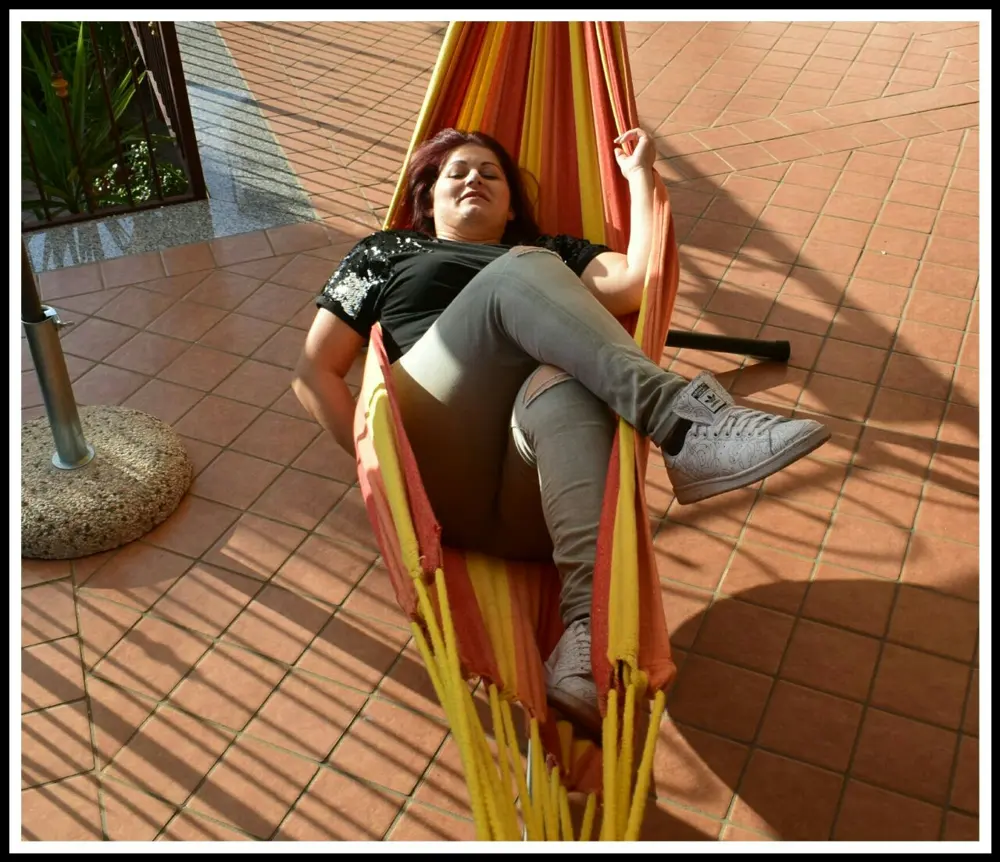
Tropilex: Avere un'amaca sul terrazzo è davvero qualcosa di rilassante e anche bella da vedere. Oggi parliamo di un'azienda specializzata nel relax fisico, ma di conseguenza diventa anche mentale.
Le amache e sedie sospese sono simbolo di momenti tranquilli, come se fossi in vacanza tutto l'anno ma direttamente a casa tua.
L'azienda è Tropilex, con prezzi davvero convenienti si può avere a casa un accessorio d'arredamento da giardino unico ed inimitabile.
Infatti ci sono per tutti i gusti, amache singole, doppie, sdraiata, a sedia che dondola appesa ad un albero sospesa o ad un supporto, a poltrona.
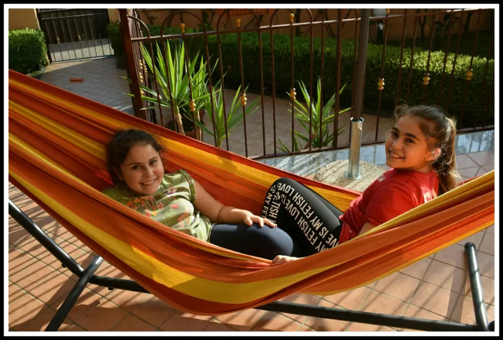
Per non parlare dei tessuti, davvero una vasta scelta che credetemi, avrete l'imbarazzo della scelta per quanto sono belle.
La Tropilex vende anche cuscini abbinati ai tessuti e teli che scegliamo sulla nostra amica. Tessuti che sono rifiniti a mano dai tessitori della Colombia e India. Lavori che vengono tenuti sotto controllo da vicino.
Ci sono supporti in legno che provengono direttamente da foreste scandinave e, cosa molto importante, sono certificati FSC.
Cos'è la certificazione FSC?
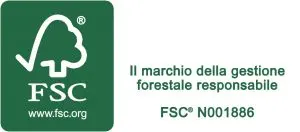
È un controllo internazionale per i prodotti provenienti dalle foreste.
Tale certificato viene rilasciato solo dagli Enti Certificati che siano in possesso di accreditamento FSC. Tutto svolgo per la cura delle nostre foreste.
I supporti invece in metallo, provengono dalla Cina, quasi vicino a Shangai, a conduzione familiare.
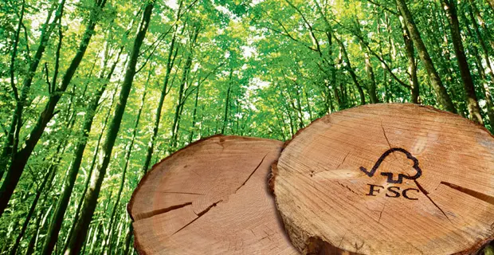
Quasi l'80% delle amache a sedie sospese della Tropilex, sono costruite e certificate dalla Oeko-Tex 100.
Cos'è Oeko-Tex 100?
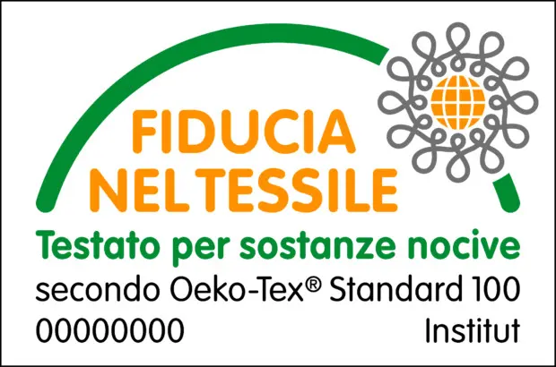
È un controllo di certificazione nel settore delle materie prime tessili. Si occupa di tutta la fase della lavorazione, fino al prodotto finito.
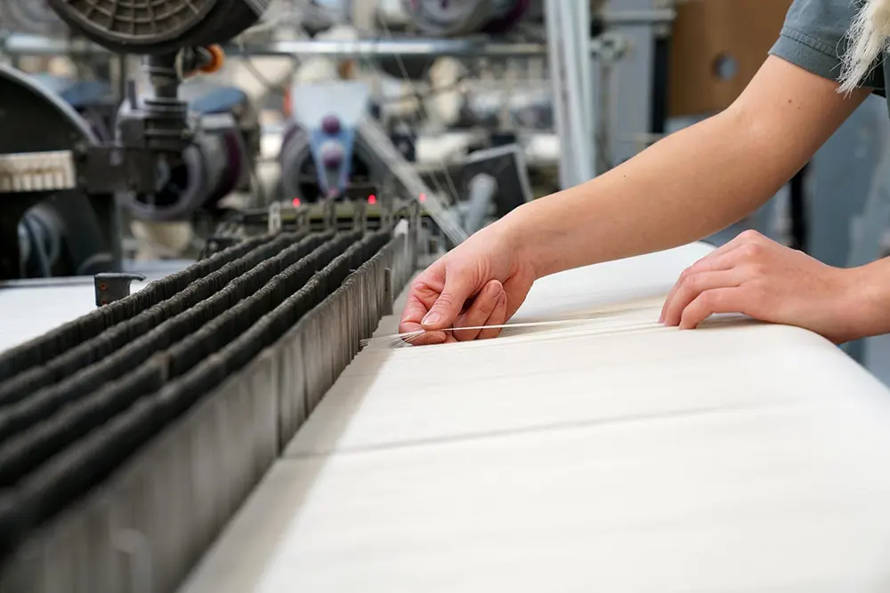
Questo perché identifica quei prodotti che presentano rischi per la salute del consumatore. Per farsì che un prodotto sia idoneo alla certificazione, vengono fatti innumerevoli test. Infatti, non si tratta solo della qualità e provenienza del tessuto, ma anche della scelta delle decorazioni, Bottini, fili che usano per cucire.
Ovviamente se la Tropilex si impegna a rispettare l'ambiente sia in tessuti che in supporti, non poteva non essere un'azienda ecologica.
Infatti, utilizza un Packaging ecologico appunto, assumendosi tutte le responsabilità nell'imballaggio delle confezioni nel rispetto dell'ambiente con scatole riciclate.
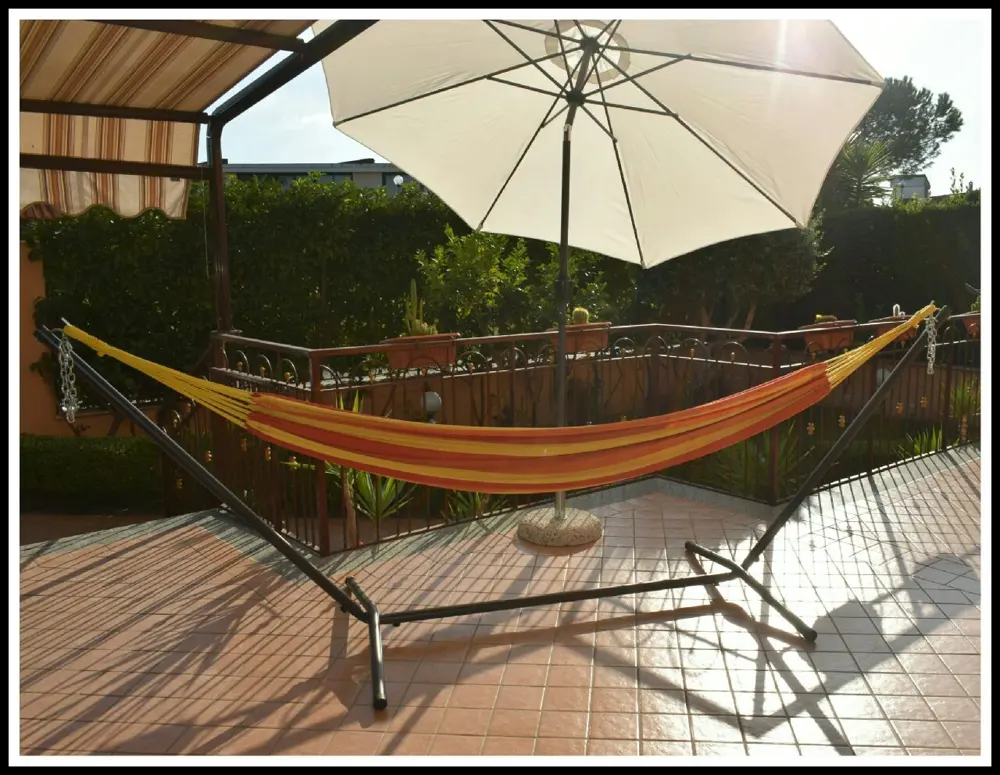
Io ho avuto il piacere di provare l'amaca singola con supporto.
Iniziamo col dire che è di metallo nero e facilissima da montare.
Di fatti, ci sono voluti giusto 10 minuti con orologio alla mano.
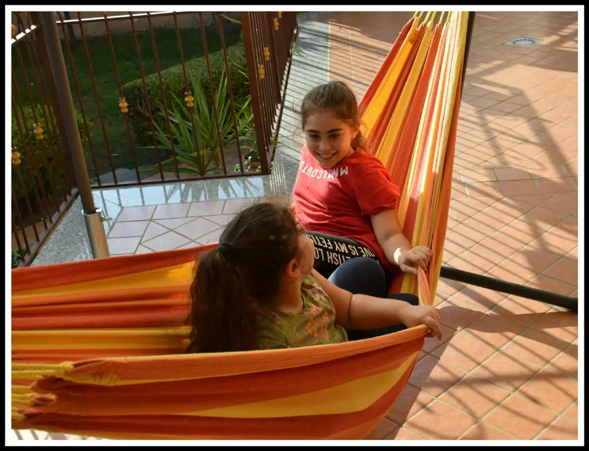
Supporto in metallo tropilex:
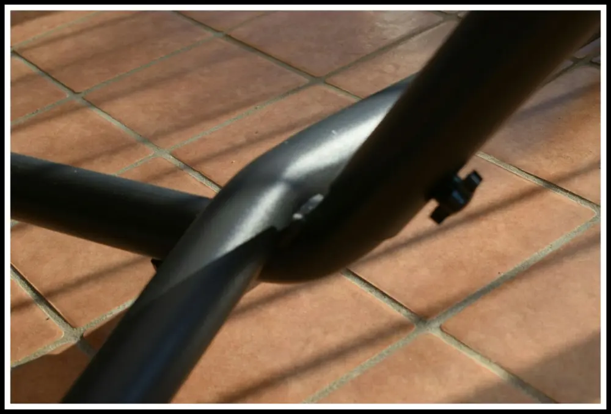
Il peso è di 23 kg ma semplice da spostare, ve lo posso garantire. Ha una portata di 160 kg e quindi non c'è rischio che possiate cadere o che si possa strappare. La lunghezza del supporto è di 340cm × 110cm di larghezza. Ed è alta 125cm ma è dotata di una catena in metallo che serve per regolare la lunghezza.
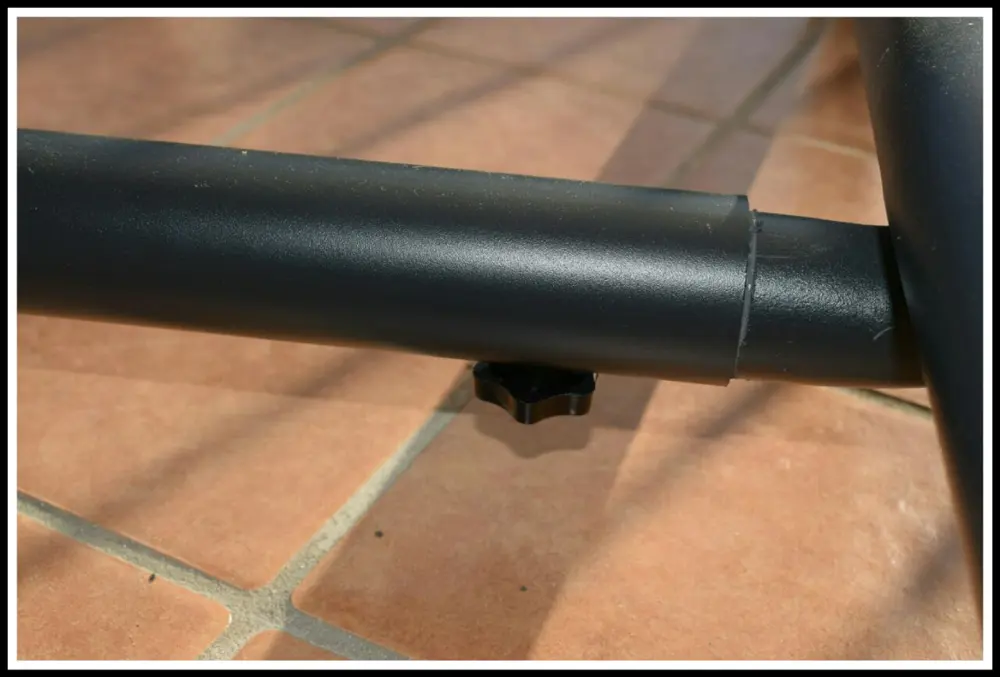
È un supporto bello da vedere ma soprattutto robusto. È stato pensato per resistere a tutti i cambiamenti atmosferici quindi, non dovremo preoccuparci se piove o c'è il sole perché non succederà assolutamente nulla.
Il telo tropilex:
Il telo che è arrivato è color arancione. Un bellissimo colore estivo e vivace. Ed è in poli-cotone.
Perché esistono queste corde gialle?
Se ci facciamo caso quasi tutti i teli delle amache, che siano sdraiate o sedute, posseggono queste cordicine nei lati.
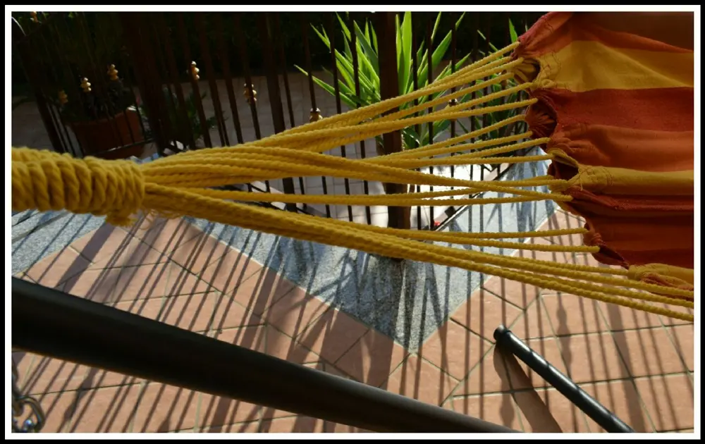
Questo metodo colombiano permette una migliore distruzione del peso, dunque in un maggior confort e relax.
In più questo è composto dal 70% di cotone e il 30% in poliestere, il chè rende la seduta comoda e morbida.
L'amaca è resistente alle abbondanti precipitazioni quindi, anche se tenuta in giardino non c'è pericolo. Ma è comunque consigliabile di tenerla in luoghi per lo più asciutti. Magari anche solo per il sole che con il tempo cambia i colori.
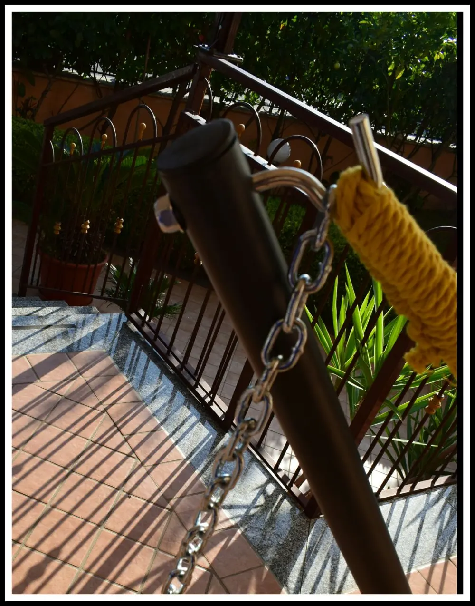
Inoltre, è bene sapere che i ganci di sospensione sono aperti, questo permette di poter appendere l'amaca ovunque noi vogliamo.
Insomma, un bel momento di relax accompagnato dalla sicurezza e non a discapito dell'ambiente. Voglio dire, più rilassante di così non c'è niente!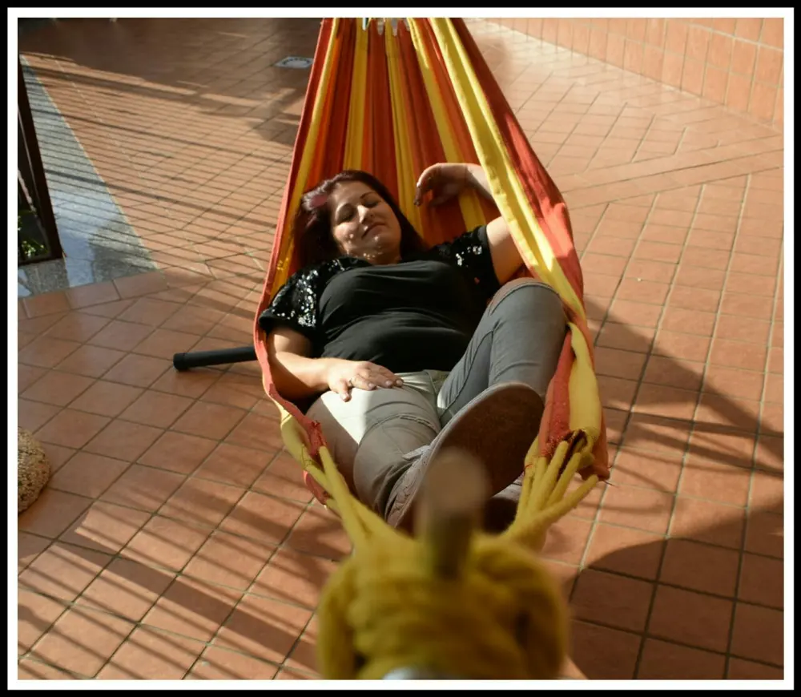
Prezzo: 119,00 €
Ma vi posso dire che ci sono alcune ancor più belle e con colori diversi.
Ci sono le sedie sospese che non costano nemmeno poi tanto. E potrete sentirvi avvolti in un abbraccio dondolante. Fantastiche!
È possibile acquistare anche separatamente sia il supporto che l'amaca e tutti gli accessori necessari.
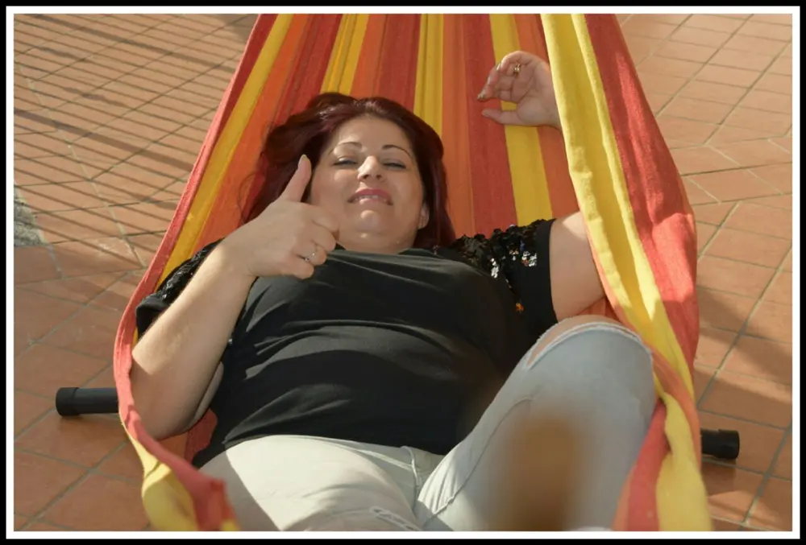
Vi posto anche un video per farvi vedere la comodità e la bellezza di quest'amaca.
Io vi consiglio davvero di farvi un salto sul sito e vi renderete conto che vorrete acquistarne immediatamente una anche voi :D
Ringrazio l'azienda per la fiducia e soprattutto per il relax che regala a tutti i suoi clienti.